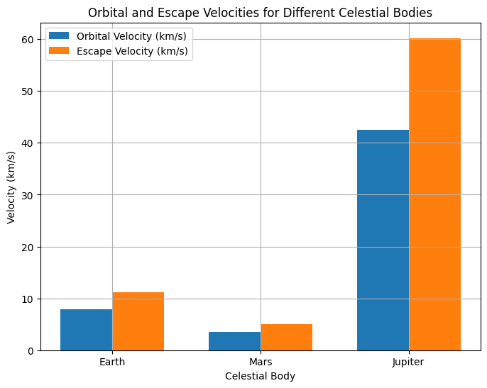

Escape Velocities and Cosmic Velocities
Motivation
Escape velocity is a fundamental concept in astrophysics and space exploration. It defines the minimum speed an object must reach to break free from a celestial body's gravitational pull. Expanding on this idea, the first, second, and third cosmic velocities describe different thresholds for achieving stable orbits, escaping planetary gravity, and even leaving a star system.
These principles are essential for satellite launches, interplanetary missions, and theoretical interstellar travel. Understanding these velocities allows scientists to design efficient spacecraft trajectories, predict orbital behavior, and plan missions beyond Earth.
Definitions of Cosmic Velocities
1. First Cosmic Velocity (Orbital Velocity)
The first cosmic velocity (also called orbital velocity) is the minimum speed needed for an object to stay in a stable circular orbit around a planet without propulsion. It is derived from the balance of gravitational attraction and centripetal force:
where:
- \(G\) = gravitational constant (\(6.674 \times 10^{-11} \, \text{m}^3\text{kg}^{-1}\text{s}^{-2}\)),
- \(M\) = mass of the celestial body,
- \(r\) = orbital radius from the center of the celestial body.
For Earth, assuming a low-altitude orbit (\(r \approx R_E\)):
This means a satellite must travel at 7.91 km/s to maintain a low Earth orbit.
2. Second Cosmic Velocity (Escape Velocity)
The second cosmic velocity (escape velocity) is the minimum speed needed to completely escape a planet's gravitational influence without additional propulsion. It is derived from energy conservation:
Solving for \( v \):
Since \(v_2 = \sqrt{2} v_1\), escape velocity is about 41% higher than orbital velocity.
For Earth:
A spacecraft must reach 11.2 km/s to leave Earth's gravitational field.
3. Third Cosmic Velocity (Solar System Escape Velocity)
The third cosmic velocity is the minimum speed required to escape the Sun's gravitational influence from Earth’s orbit. It is calculated using the escape velocity formula, but with the Sun’s mass and Earth's orbital distance (\(r \approx 1\) AU):
For the Sun:
A spacecraft must exceed 42.1 km/s to completely leave the Solar System, considering Earth's initial orbital speed (\(v_{\text{Earth}} = 29.78\) km/s). Thus, an additional 12.3 km/s is needed beyond Earth's motion.
Examples of Spacecraft Achieving Third Cosmic Velocity:
- Voyager 1: ~17 km/s (relative to Sun) – fastest human-made object, currently in interstellar space.
- New Horizons: ~16.26 km/s, heading towards the Kuiper Belt.
Mathematical Analysis and Simulation
To visualize escape and orbital velocities for different celestial bodies, we compute \(v_1\) and \(v_2\) for Earth, Mars, and Jupiter:
| Body | Mass (\(10^{24}\) kg) | Radius (km) | \(v_1\) (km/s) | \(v_2\) (km/s) |
|---|---|---|---|---|
| Earth | 5.972 | 6,371 | 7.91 | 11.2 |
| Mars | 0.6417 | 3,390 | 3.55 | 5.03 |
| Jupiter | 1898 | 69,911 | 42.1 | 59.5 |
Python Code for Computation and Visualization
The following Python script calculates and plots escape velocities for different celestial bodies:
import numpy as np
import matplotlib.pyplot as plt
# Constants
G = 6.67430e-11 # Gravitational constant (m^3 kg^-1 s^-2)
bodies = {
"Earth": {"M": 5.972e24, "R": 6.371e6},
"Mars": {"M": 0.6417e24, "R": 3.39e6},
"Jupiter": {"M": 1.898e27, "R": 6.9911e7},
}
# Compute velocities
for body, data in bodies.items():
M, R = data["M"], data["R"]
v1 = np.sqrt(G * M / R) / 1000 # Convert to km/s
v2 = np.sqrt(2 * G * M / R) / 1000
data["v1"], data["v2"] = v1, v2
# Plot results
labels = list(bodies.keys())
v1_vals = [bodies[b]["v1"] for b in labels]
v2_vals = [bodies[b]["v2"] for b in labels]
x = np.arange(len(labels))
width = 0.35
fig, ax = plt.subplots(figsize=(8,6))
ax.bar(x - width/2, v1_vals, width, label="Orbital Velocity (km/s)")
ax.bar(x + width/2, v2_vals, width, label="Escape Velocity (km/s)")
ax.set_xlabel("Celestial Body")
ax.set_ylabel("Velocity (km/s)")
ax.set_title("Orbital and Escape Velocities for Different Celestial Bodies")
ax.set_xticks(x)
ax.set_xticklabels(labels)
ax.legend()
ax.grid(True)
plt.show()

Results
The bar chart visually compares orbital and escape velocities for Earth, Mars, and Jupiter. The trend shows that:
- Jupiter has the highest escape velocity due to its massive gravitational pull.
- Mars has the lowest escape velocity, making it easier for spacecraft to leave its surface.
Importance in Space Exploration
1. Launching Satellites
Satellites require first cosmic velocity to remain in orbit. Too slow, and they fall back; too fast, and they escape Earth’s gravity.
2. Interplanetary Travel
- Missions to Mars (e.g., Perseverance rover) require overcoming Earth’s escape velocity and matching Mars' orbital speed.
- Missions to Jupiter (e.g., Juno probe) require additional velocity and precise gravity assists.
3. Interstellar Exploration
- Voyager 1 & 2 have exceeded third cosmic velocity, now traveling beyond the Solar System.
- Future missions may use advanced propulsion (ion thrusters, nuclear engines) to achieve speeds beyond 42.1 km/s.
Conclusion
Understanding cosmic velocities is essential for spacecraft design, mission planning, and space exploration. Whether keeping satellites in orbit, escaping Earth's gravity, or reaching interstellar space, these velocity thresholds define the boundaries of our exploration capabilities. With future advancements, humanity may one day surpass even the third cosmic velocity, venturing into deep space and beyond. 🚀✨